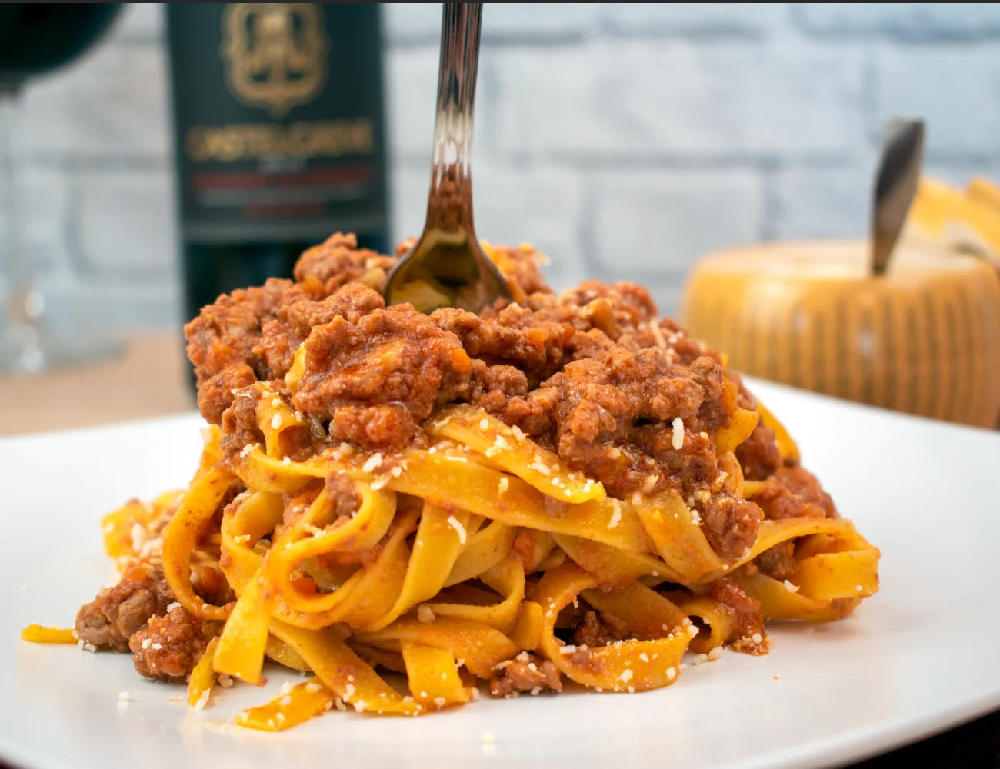

Home
La conosciutissima pasta alla bolognese

Descrizione
L'originale ricetta del ragù alla bolognese, il tradizionale per tagliatelle e lasagne con ingredienti e consigli per eseguirlo alla perfezione!
La versione ufficiale del ragù alla bolognese prevede degli ingredienti specifici, le dosi calibrate tra essi e un procedimento di cottura standard. Da questo procedimento ufficialmente riconosciuto si attinge, come ogni buona ricetta tradizionale, per declinarlo e creare la propria ricetta perfetta. Tutte le sfumature del ragù le abbiamo raccolto nel box in fondo alla ricetta, ma un punto è indiscutibile: il ragù alla bolognese è un vero comfort food!
- Passata 300 gr
- Macinato 600 gr
- Soffrittino (una cipollina, una carotina, e un po di sedano)
- Vino Un biccherino
- Sale e Pepe quanto basta Dio Porco
- Olio extra vergina porca di quella madonna d'oliva 2-3 cucchiai
-
We, allour, fai sto soffrittino veloce-veloce, fin quando la scipolla diventa dorata
-
Poi ci metti quel macinato buono-buono, lo fai friggere a fuoco alto
-
Quando e' uscita tutta l'acqua dalla carne ed e' evaporata, ci metti il vino Dio Can
-
A vino evaporato, aggiungi la passata e fai andare a fuoco basso, aggiungendo acqua quando serve
-
Al passare delle 2 ore, metti la pasta Porca Madonna Troia Puttana
-
Eh vaiii eh, mettici sta pasta porca madonna, agg' e finit. Punto.